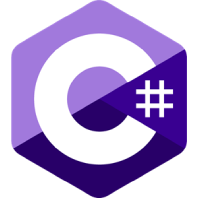

Swift

https://www.swift.org/
Swift é uma linguagem de programação compilada de alto nível, de uso geral e multiparadigma, desenvolvida pela Apple Inc. visando desenvolvimento para dispositivos Apple.
Vantagens
- Prevenção de null pointer
- Potencial para uso em full stack
- Código aberto
Desvantagens
- Pouco suporte em IDEs
- Sem suporte para iOS antigos
- Suporte precário fora do macOS
Usada em
- Asana
- Firefox
- Wikipedia
- Wordpress
Javascript
https://developer.mozilla.org/en-US/docs/Web/JavaScript
JavaScript é uma linguagem de programação interpretada estruturada, de script em alto nível com tipagem dinâmica fraca e multiparadigma. Muito popular em aplicações para a web.
Vantagens
- Execução no lado do cliente
- Alta interoperabilidade
- Suporta programação funcional
Desvantagens
- Interpretação variável
- Sem herança múltipla
- Recursos limitados para depurar
Usada em
- Amazon
- Discord
- Duolingo
- Netflix
C# (C Sharp)

https://dotnet.microsoft.com/en-us/languages/csharp
C# é uma linguagem de programação, multiparadigma, de tipagem forte, desenvolvida pela Microsoft como parte da plataforma .NET.
Vantagens
- Tipagem forte
- Async/Await disponível
- Sistema de tipos unificado
Desvantagens
- Pouco suporte fora do Windows
- Pouco controle de desempenho
- Compilação com overhead
Usada em
- Autodesk Revit
- Blender
- GitHub Desktop
- Paint.net
- Stack Overflow
- Unity